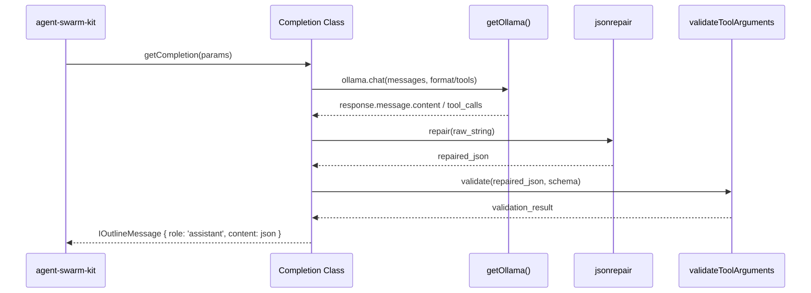

The news-sentiment-ai-trader system utilizes Ollama-compatible models to perform structured sentiment analysis. The system implements two distinct completion strategies to ensure robust JSON output from LLMs: OllamaOutlineToolCompletion (function calling) and OllamaOutlineFormatCompletion (native JSON mode). Both implementations are built on top of the agent-swarm-kit and target the minimax-m2.7:cloud model.
All completions are routed through a central configuration that connects to an Ollama host.
minimax-m2.7:cloud,]https://ollama.com]OLLAMA_TOKEN environment variable]getOllama function uses singleshot to ensure only one instance of the Ollama client is created]Both completion types share identical retry and timeout logic to handle network instability or model hallucinations:
retry wrapper for network/timeout errors)]This implementation forces the model to use a specific function called provide_answer. It is registered under the name ollama_outline_tool_completion].
Mechanism:
function is created with the name provide_answer. The JSON schema for the response is passed into the parameters field].provide_answer and increments the attempt counter].jsonrepair before parsing to fix minor syntax errors in the LLM's JSON string].This implementation uses Ollama's native structured output capability. It is registered under the name ollama_outline_format_completion].
Mechanism:
format parameter of the ollama.chat call].message.content is expected to be a raw JSON string.validateToolArguments from agent-swarm-kit].The following diagram illustrates how fetchCompletion handles the request lifecycle for both implementations.
Completion Request Lifecycle

Because LLMs occasionally output invalid JSON (e.g., trailing commas, missing quotes), the system uses the jsonrepair library. This is applied to both tool arguments and format-mode content before JSON.parse is invoked,].
To prevent the trading pipeline from hanging indefinitely, a Promise.race is used between the Ollama request and a sleep timer]. If the timer wins, a COMPLETION_TIMEOUT_SYMBOL is returned, triggering a retry].
The following diagram maps the transformation of data from the initial call to the final structured message.
Data Transformation Pipeline

| Feature | OllamaOutlineToolCompletion |
OllamaOutlineFormatCompletion |
|---|---|---|
| Registration Name | ollama_outline_tool_completion |
ollama_outline_format_completion |
| Model | minimax-m2.7:cloud |
minimax-m2.7:cloud |
| Primary Method | Function calling (provide_answer) |
Native JSON format schema |
| Internal Retries | 3 attempts with system prompt injection | 3 attempts with schema re-validation |
| Global Retries | 5 retries (5s delay) | 5 retries (5s delay) |
| Flags | Russian Language, Reasoning: high | Russian Language, Reasoning: high |